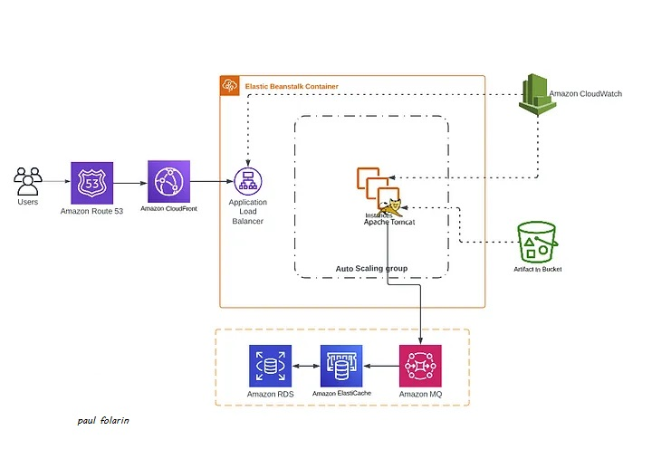

GitHub
PAUL fOLARIN
Highly experienced DevOps Engineer with 5+ years of experience in
designing, implementing, and maintaining CI/CD pipelines and
cloud-based infrastructure. Strong background in automation,
containerization and infrastructure as code. Proficient in using
tools such as Terraform, Ansible, Kubernetes, Jenkins, and Git.
Experienced in working with cloud platforms such as AWS, Azure,
and GCP. Strong ability to work in a collaborative environment and
ability to understand the importance of collaboration between
development and operations teams.

AWS Services Used: Re-Factoring Web App on AWS Cloud[Cloud Native]
using AWS services like AWS Beanstalk, Amazon Simple Storage
Service (S3), Amazon Relational Database System (RDS), Amazon
Elastic Cache, jdk8, maven
In this guide, we will use Ansible as a Deployment tool in a
Continuous Integration/Continuous Deployment process using Jenkins
Job. In the world of CI/CD process, Jenkins is a popular tool for
provisioning environments as well as application deployment
through pipeline flow. Still, sometimes, it gets overwhelming to
maintain the application's status, and script reusability becomes
harder as the project grows.